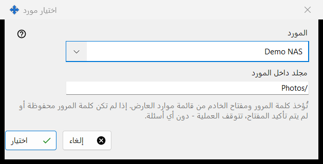
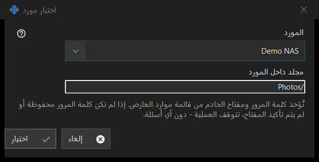

اختيار مورد
الغرض من هذه النافذة
يختار موردًا من قائمة موارد العارض ليكون مصدر عملية مجدولة أو وجهتها. يُفتح من الزر المورد.. بجانب المصدر أو الوجهة في نافذة العملية المجدولة.


بهذا الترتيب
- اختر المورد في القائمة المورد.
- تحقق من مجلد داخل المورد أو غيّره؛ ويبدأ بالمجلد الجذر للمورد.
- اضغط اختيار. ويُبقي إلغاء المكان السابق.
عناصر النافذة
قائمة الموارد
تُعرض خوادم SFTP ومجلدات الشبكة فقط من قائمة العارض، مرتبة بالاسم؛ ولا تظهر الموارد من الأنواع الأخرى. وإن لم يوجد أي منها تقول النافذة: لا توجد موارد مناسبة في قائمة الموارد. أضف خادم SFTP أو مجلد شبكة في العارض. ويبقى الزر اختيار معطّلًا. تتم إضافة مورد أو إعادة الوثوق به في العارض؛ ولا تُجري هذه النافذة أي اتصال.
مجلد داخل المورد
يجب أن يقع المجلد داخل جذر المورد المختار، وإلا رفضه حفظ في نافذة العملية. واختيار مورد آخر يعيد ملء الحقل بجذر ذلك المورد.
تشغيل بلا أسئلة
تؤخذ كلمة المرور ومفتاح الخادم من قائمة موارد العارض. ولا يسأل التشغيل شيئًا: إذا لم تكن كلمة المرور محفوظة أو لم يتم تأكيد مفتاح الخادم تتوقف العملية ويذكر السجل السبب. لا يمكن أن يكون المورد المخصص للقراءة فقط هدفًا لنقل أو حذف، ويُرفض المورد الذي يحمي PIN جذره، وتقبل الأرشفة المجلدات العادية فقط.